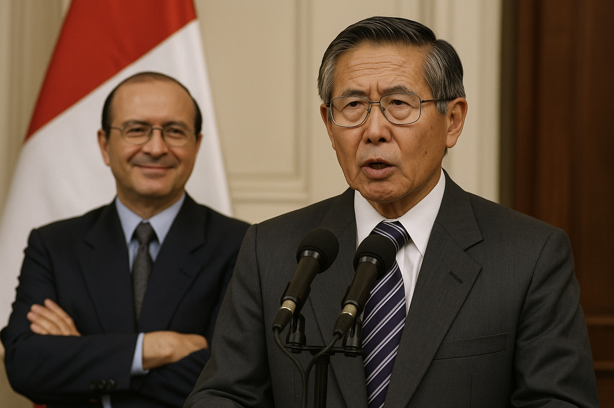

PERÚ
Un Estado Capturado: La Sombra del Fujimorismo
 24 de abril, 2025
24 de abril, 2025


En el Perú, hablar del fujimorismo no es solo hablar de un partido político o de un apellido. Es hablar de un modelo de poder que ha sobrevivido a escándalos, condenas judiciales, derrotas electorales y acusaciones de corrupción sistemática.
Desde el autogolpe de 1992, cuando Alberto Fujimori disolvió el Congreso con apoyo de las Fuerzas Armadas y reconfigurar el sistema político a su medida, el país entró en una nueva etapa. Lo que se presentó como una cruzada contra el terrorismo y la corrupción terminó consolidando una dictadura encubierta, con un aparato de propaganda, cooptación institucional y represión que sentó las bases del poder fujimorista.
Hoy, aunque Alberto Fujimori, ya fallecido, fue condenado en su momento por crímenes de lesa humanidad, su legado sigue operando a través de estructuras políticas, redes clientelares y figuras como su hija Keiko Fujimori, quien, sin haber ganado una elección presidencial, ejerce una influencia determinante sobre el rumbo del país. Su partido, Fuerza Popular, ha sido protagonista de múltiples episodios de bloqueo político, ha colonizado instituciones clave y ha instaurado una lógica de “gobernabilidad negociada” que paraliza al Ejecutivo si no hay beneficios para su bancada.
Pero el fujimorismo no opera solo con votos en el Congreso. Se ha infiltrado en el Ministerio Público, ha intentado controlar la Junta Nacional de Justicia, influye en los nombramientos del Tribunal Constitucional y mantiene nexos con sectores del empresariado, la ultraderecha internacional y medios de comunicación. Y en este ajedrez político, muchas piezas siguen moviéndose bajo la lógica montesinista: manipulación, chantaje, control del relato y operaciones encubiertas.
Breve historia del Fujimorismo
En 1990, Alberto Fujimori, un ingeniero agrónomo prácticamente desconocido, derrota sorpresivamente a Mario Vargas Llosa en la segunda vuelta presidencial. Se presenta como un outsider, sin partido político tradicional, con un discurso populista y pragmático que seduce a una población harta del establishment (grupo de personas que ejerce el poder en un país, en una organización o en un ámbito determinado) y aterrada por la hiperinflación y el terrorismo.
Una vez en el poder, Fujimori toma un camino radical. En abril de 1992, da un autogolpe de Estado: disuelve el Congreso, interviene el Poder Judicial y concentra el poder en el Ejecutivo. Lo hace con el apoyo de las Fuerzas Armadas y el asesor estratégico más oscuro de la historia política peruana: Vladimiro Montesinos. El discurso oficial habla de ”refundar el Estado” y ”combatir al terrorismo y la corrupción”. La realidad: se instaura un régimen autoritario que elimina contrapesos, silencia a la prensa, persigue a opositores y convierte las instituciones en extensiones del poder presidencial.
Analítica 360°.
Fujimori mantuvo una fachada democrática: elecciones, Congreso, Constitución… pero todo bajo su dominio. En 1993 impuso una nueva Carta Magna a medida, diseñada para perpetuarse, permitiendo la reelección presidencial. En 1995 fue reelegido con amplio margen, gracias al control de los medios y el aparato estatal. Para el 2000, ya sin máscaras, forzó un tercer mandato violando su propia Constitución, respaldado por un Tribunal Constitucional capturado. — Cuando el Estado no sólo regula, sino que es el propio capturado —.
El derrumbe y el inicio del mito

Getty
El 2000 fue el principio del fin. Un ”vladivideo” —una grabación de Montesinos entregando sobornos a un congresista— desató el escándalo. Se destapó una megacorrupción sistémica. Montesinos huyó del país. Fujimori, en una jugada inaudita, viajó a Japón y renunció por fax a la presidencia.
El Congreso, dominado ya por una nueva mayoría opositora, rechazó su renuncia y lo destituyó por incapacidad moral. En 2005, fue arrestado en Chile y extraditado al Perú, donde fue condenado a 25 años de prisión por violaciones a los derechos humanos y corrupción.
Sin embargo, el fujimorismo no murió con la caída de su líder. Todo lo contrario: se reorganizó y capitalizó el apoyo popular residual y reapareció con fuerza en los años siguientes, bajo una nueva figura.
El Fujimorismo después de Fujimori: sobrevivir, mutar y volver al juego
La caída de Alberto Fujimori en el año 2000 parecía el final definitivo de un régimen. El expresidente fue destituido, Montesinos encarcelado, y el país entró en una etapa de “transición democrática” liderada por Valentín Paniagua. Pero lo que parecía una muerte política fue solo una mutación. El fujimorismo no desapareció: se reconfiguró, cambió de rostro y volvió al ruedo.
En 2006, Keiko Fujimori, primogénita del expresidente, ingresó oficialmente a la política. Con apenas 31 años, fue la congresista más votada del país. Desde entonces, su figura ha estado en el centro del proyecto fujimorista. Heredó no solo el capital político de su padre, sino también el aparato partidario, los recursos, y el respaldo de una base social consolidada en sectores populares, especialmente en la sierra y costa norte del país.
En 2011, Keiko se lanza a la presidencia y llega a segunda vuelta contra
El Congreso como bastión del poder
La verdadera fortaleza del fujimorismo ha estado en el Congreso. En 2016, Fuerza Popular consiguió una mayoría aplastante: 73 de 130 congresistas. Desde ahí, Keiko gobernó sin gobernar. No necesitó la presidencia para imponer su agenda: obstruyó reformas, censuró ministros, presionó al Ejecutivo y bloqueó cualquier intento de cambio que no le favoreciera. Su estrategia fue clara: destruir al adversario político antes que permitir que este gobierne.
Este poder se utilizó no solo para blindar intereses propios, sino también para negociar cuotas de poder en el Ministerio Público, el Tribunal Constitucional, la Defensoría del Pueblo y los organismos electorales. Se instauró una lógica de chantaje institucional: o se cede a las exigencias de Fuerza Popular, o no hay gobernabilidad. Esta fórmula, perfeccionada tras años de operar como oposición con mayoría parlamentaria, convirtió al Congreso en una herramienta de control y venganza política.
Incluso con bancadas reducidas en los congresos siguientes, el fujimorismo ha mantenido alianzas estratégicas con sectores ultraconservadores, grupos empresariales, facciones evangélicas y bloques de derecha radical. En algunos casos, ha funcionado como el núcleo duro de una coalición informal autoritaria, que defiende privilegios históricos, impide investigaciones por corrupción, y ataca sistemáticamente a la prensa, la academia crítica y el sistema de justicia cuando no le son funcionales.
El politólogo Alberto Vergara, uno de los más agudos analistas del fenómeno, lo resume de forma directa:
“El fujimorismo ha sido el gran partido antisistema desde adentro del sistema”.
Para Vergara, el Congreso dominado por Fuerza Popular entre 2016 y 2020 no sólo paralizó al Ejecutivo, sino que intentó reconfigurar el Estado a su imagen y semejanza. No había una propuesta programática clara, sino una agenda basada en el bloqueo, la revancha y el cálculo del poder.
El también politólogo Carlos Meléndez ha explicado que el fujimorismo funciona como un “partido patronal de guerra”, es decir, una estructura que sobrevive no por su propuesta política, sino por su capacidad de movilizar recursos, castigar adversarios y alinear fuerzas en función de intereses particulares.
La toma de los poderes del Estado: infiltración, control y captura institucional
El Ministerio Público: fiscales a medida
Durante años, el fujimorismo buscó interferir en la labor del Ministerio Público, especialmente cuando las investigaciones por corrupción tocaban a figuras vinculadas a Keiko Fujimori y su entorno. Un momento emblemático fue en 2018, cuando se desató el escándalo de los “CNM Audios”, que revelaron redes de tráfico de influencias y pactos bajo la mesa entre magistrados, políticos y empresarios.
El caso puso al descubierto cómo se operaba para colocar fiscales y jueces a conveniencia, mediante acuerdos oscuros en el ya desacreditado Consejo Nacional de la Magistratura. El fujimorismo, lejos de tomar distancia, fue acusado de proteger a personajes clave de ese entramado, y de bloquear reformas que buscaban limpiar la casa.
El Tribunal Constitucional: blindaje político-judicial
En 2020, en medio de una de las tantas crisis políticas, el Congreso –dominada por fuerzas aliadas al fujimorismo– intentó imponer un nuevo Tribunal Constitucional (TC) sin un proceso transparente ni meritocrático. La jugada fue denunciada por diversos sectores como un intento de garantizarse impunidad futura y control sobre decisiones clave, especialmente en casos relacionados con la corrupción y derechos fundamentales.
El intento generó tal escándalo que fue suspendido momentáneamente tras la disolución del Congreso por parte de Martín Vizcarra. Sin embargo, el interés por copar el TC no ha cesado: sigue siendo un objetivo estratégico para asegurar fallos favorables y detener cualquier norma que ponga en riesgo los privilegios de los grupos que orbitan alrededor del fujimorismo.
La Junta Nacional de Justicia: enemigo declarado
La Junta Nacional de Justicia (JNJ), encargada de nombrar y sancionar jueces y fiscales, también se convirtió en blanco. En los últimos años, congresistas fujimoristas y sus aliados han intentado destituir a sus miembros, bajo pretextos administrativos o cuestionamientos menores. El trasfondo es claro: desactivar a un organismo que ha sido uno de los pocos en ejercer cierto contrapeso frente al poder político.
La señora en cuestión: el poder de Keiko sin una sola banda presidencial
En el centro de esta trama de influencia y captura institucional está Keiko Fujimori, la heredera política del régimen de su padre y la figura más poderosa del país sin haber sido presidenta. No ha necesitado la banda presidencial para ejercer un poder real y duradero: ha gobernado desde las sombras, desde la bancada, desde las alianzas y desde el miedo.
A pesar de estar procesada por lavado de activos, obstrucción a la justicia y presunto liderazgo de una organización criminal —acusaciones que podrían costarle 30 años de prisión—, Keiko ha conseguido mantener su relevancia con una es- trategia doble: victimización y polarización. Su narrativa se ha simplificado en una fórmula efectiva: “yo o el comunismo”. Esta estrategia le ha permitido captar sectores de la clase media alta, evangélicos, conservadores y empresarios que ven en ella un “mal necesario”.
La operadora silenciosa
En los pasillos del Congreso y en las oficinas de las bancadas aliadas, se sabe que nada importante se aprueba sin el visto bueno de Keiko. Aun cuando no tenga curul, su palabra pesa más que la de cualquier presidente. Legisladores le deben favores, fiscales la temen, y magistrados saben que meterse con ella puede significar perder sus cargos.
Diversos periodistas de investigación y analistas políticos han sostenido que Keiko opera como una jefa de coalición informal, que negocia apoyos, reparte cuotas de poder y moviliza operadores políticos. El periodista Gustavo Gorriti, director de IDL-Reporteros, ha sido uno de los más insistentes en denunciar las presiones del entorno fujimorista contra jueces, fiscales y periodistas. Para Gorriti, el fujimorismo no solo sobrevive, sino que se “fortalece en la podredumbre del sistema”.
“Gobierna sin gobernar”
El politólogo Alberto Vergara ha sintetizado con precisión el fenómeno: “Keiko ha tenido más poder sin ser presidenta que muchos que
sí lo fueron”.
Desde el Congreso de 2016 hasta hoy, ha demostrado que el poder no siempre está en el Ejecutivo. Su verdadero
terreno ha sido el Legislativo, los medios de comunicación aliados, las alianzas con la derecha radical, y la amenaza constante de la
vacancia o la obstrucción como arma de presión.
Un país rehén del pasado
El fujimorismo no es solo un legado del pasado, sino una maquinaria vigente que ha moldeado la política peruana con métodos autoritarios y oportunistas. Su influencia ha vaciado las instituciones, distorsionado la democracia y mantenido el control desde las sombras. Aunque ha sido derrotado electoralmente y judicialmente, ha demostrado una asombrosa capacidad de adaptación y supervivencia. Esta persistencia revela un fracaso colectivo: de élites cómplices, medios complacientes y una oposición incapaz de construir alternativas sólidas. Mientras tanto, el poder se usa no para transformar, sino para blindar y castigar.
A pesar del panorama sombrío, hay luces de resistencia: prensa independiente, justicia valiente y ciudadanía activa. Pero esta lucha
necesita memoria y una firme decisión de no ceder ante lo inaceptable.
Porque en el Perú, cada vez que se negocia con el
autoritarismo en nombre de la estabilidad… ese pasado siempre vuelve. Y cuando vuelve, obra con intereses.